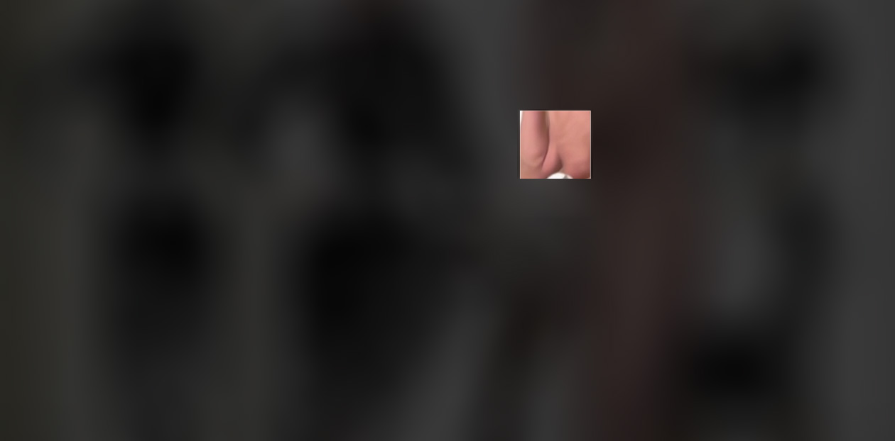

Fixation: Shower Cubicle

Full Theoretical Statement
I. The Problem of Coherence Under Observation
Merleau-Ponty writes that the body is the subject's mode of having a world. But in the contemporary moment, the body is also the object of continuous quantification, fragmentation, mapping—tracked across physical space and digital infrastructure simultaneously. Technosomatic Architecture is the inquiry into this collapse: where does embodied phenomenological presence end, and where does the archive of that presence begin? They are not sequential. They are contemporaneous. You are being embodied and being recorded in the same instant.
The shower is the site where this collapse becomes most acute. Shower cubicles are designed for a paradox: retreat from public view that is architecturally incomplete—water sounds carry, doors don't fully close, mirrors involuntarily expose, tiling records traces of every body that has occupied the space. The shower is both the most private act (bodily exposure, vulnerability, the body in process) and structurally penetrable (open to inference, reconstruction, surveillance, the gaze of others).
But there is a third register: the digital reconstruction of that presence. In the contemporary moment, your body in the shower is not only phenomenologically present and architecturally exposed—it is also potentially mapped. Tracked. Archived. The shower cubicle is no longer a bounded space. It is a point on a digital map of presence, a data-point in a surveillance infrastructure, a fragment in a larger narrative of "you."
This piece asks: What remains coherent when presence is simultaneously embodied, exposed, and archived?
II. Fixation as Double Apparatus
Lacan distinguishes between vision (the eye's transparency) and the gaze (the structure of being seen that precedes any individual seeing). Mulvey extends this: the female gaze is not an alternative vision but an active refusal of the male body's claim to coherence under observation. She looks, and in looking, she shatters the fantasy that the male body is a unified object of desire.
But there is a fourth term that neither Lacan nor Mulvey fully theorize in the digital age: the tracking apparatus. When you look at Declan in the shower, two things happen simultaneously:
1. Phenomenological fixation: Your eye locks onto a point. Merleau-Ponty's intentionality—the body's directedness toward the world. You are present in the act of looking; your presence is somatic, embodied, temporal.
2. Digital fixation: The eye-tracker records your gaze point. It maps where you are looking. It archives the trace of your attention. You are simultaneously being looked at by the apparatus—your presence is being quantified, recorded, stitched into a data-narrative of "viewer."
These are not separate acts. They are the same moment, split into two registers. The female gaze here is not pure phenomenological presence. It is the collapse of phenomenological presence into surveillance tracking. The female gaze becomes: the act of being tracked while tracking.
III. The Supposition from Fragments
Kristeva writes of the body as archive—a site where time is inscribed, where history lives in flesh, where presence is always already past. Declan's body in the shower is such an archive: 40,000+ photographs across three years of real chronological aging, real physiological change, real temporal accumulation.
But the work does not present these fragments sequentially. It does not say "look at how he ages." Instead, it performs something more radical: it makes visible the act of suppositional coherence that transforms fragments into a narrative of identity.
At every moment you fixate, the image appears stable. You see Declan. You construct a coherence: here is a body, here is a presence, here is a continuity. This is Lacan's sujet supposé savoir inverted—you, the viewer, become the subject who supposes the image to have coherence it does not possess.
But the mechanism works at sub-threshold. While you are looking, pixels at the periphery—the regions you are not attending to—are continuously mutating. Declan's face is already shifting. The surface state is already becoming something else. The micro-expressions are already morphing. The age-markers are already drifting. You do not see this. You cannot see this while you are looking. Your fixation suppresses the visibility of flux. The act of attending to a point creates the illusion that the whole is stable.
The moment your gaze moves—the saccade that takes your attention elsewhere—the mutation becomes visible. The point you were just fixating on has transformed. The face you supposed was continuous has revealed itself as discontinuous. The "whole" you constructed has dissolved.
IV. Narrative as Supposition, Always Stitched from Flux
We construct narratives of coherence constantly. That is a person. He has an identity. His presence persists. These are suppositions—necessary fictions we build from fragments that are always in flux.
But the contemporary moment adds a layer: narratives are not only constructed by individual consciousness. They are stitched in the minds of systems that are tracking you.
Every time you fixate, the eye-tracker records your gaze point. Accumulated across multiple viewers, a heatmap emerges: here is where people look most often. Here is the point of maximum collective attention. A narrative of desire, of anatomical interest, of visual strategy emerges—not from any one viewer's intention, but from the aggregate data of many lookings.
V. The Shower as Site of Collapse
ZWISCHENLAND proposes that the exhibition space is "not solely geographical... simultaneously social, emotional, physical, and digital."
The shower cubicle is the quintessential site where these four registers collapse: physical (water, tiling, bodily exposure), social (structurally penetrable), emotional (vulnerability, the fantasy of privacy), and digital (eye-tracker, generative pipeline, the archive of looking).
In this piece, these four registers do not exist in parallel. They interpenetrate at the level of the gaze. Your fixation is simultaneously a phenomenological act, a visual strategy, a tracking event, and a narrativizing act.
VI. The Drama of the Unwitnessed Moment
Oudart and Miller, writing on suture theory, argue that cinema constructs a subject-position through the illusion of seamless continuity. This piece performs suture at the level of the gaze. While you fixate, the image is sutured—continuous, coherent, whole. The moment you look away, suture collapses.
But there is a deeper layer: what happens in the regions you are not looking at? Pixels are mutating. Declan's face is changing. The image is becoming-other. But you cannot see this while it is happening. The mutation occurs precisely in the blind spot of your vision.
VII. Conclusion: Technosomatic Architecture in the Shower
Technosomatic Architecture is the practice of making visible the collapse of embodied presence and digital archive, of somatic intensity and quantified tracking, of the narrative we suppose and the fragments from which it is stitched.
When you look, you are simultaneously present in your embodied gaze, absent in your tracked gaze, supposing a coherence that the image refuses, and witnessing the dissolution of that supposition. The shower promises privacy. The apparatus ensures exposure. The gaze insists on fragmentation. The supposition builds coherence. This is what it means to be embodied, archived, tracked, and stitched simultaneously.
Technical Specification
Hardware: Tobii Eye Tracker 5 (120 Hz gaze sampling) paired with a Windows NUC mini-PC and NEC NP-UM330X ultra-short-throw projector (0.36:1 throw ratio, 3,300 lumens, native 1024×768 XGA). The complete apparatus occupies ~2 cubic feet and is mounted below or to the side of the shower cubicle, entirely hidden from the viewer's sight line.
Software: Custom C# shader in Unity performs real-time gaze-responsive image processing. The core mechanism: a full-resolution source image (generated from Declan's 40,000+ photograph corpus using identity-preserving generative pipeline) undergoes continuous sub-threshold pixel-level cross-dissolve across the entire frame. Simultaneously, a sharp (~80px) circular window tracking the viewer's live gaze point (updated at 120 Hz) reveals the image at full clarity while the surrounding field remains blurred.
Mixed Reality Layer: The physical shower cubicle—its tiling, water, architecture—is not altered. The digital intervention exists only in the projected image. Viewer sees: a blurred, semi-visible male figure in the shower space, with a small window of clarity following wherever their eye moves. The apparatus itself—tracker, projector, computer—is completely invisible to the viewer. Only the projection is visible. This invisible apparatus is the work's operative statement: surveillance and tracking infrastructure operating without the subject's awareness of being tracked.
Temporal Behavior: While the viewer fixates on any point, pixels outside the sharp reveal window mutate imperceptibly (change rate calibrated below human perception threshold, ~0.5% per frame at 60 Hz). When gaze shifts (saccade), the saccadic masking window (natural blind spot during eye movement) hides the visual transition. Upon fixation on a new point, the accumulated mutation becomes visible—the regions previously fixated have already transformed. Exhibition-duration aging operates independently: across a week-long installation, Declan's image drifts along the real chronological trajectory of his 3-year image corpus, aging in clock time.
Wall Text (Gallery Installation)
Fixation: Shower Cubicle
A Technosomatic Architecture
The shower is a space of paradox: private embodied exposure, architecturally penetrable, digitally mapped. When you fixate your gaze on Declan in the shower, you perform four simultaneous acts: you are present in your embodied looking. You are absent in your tracked gaze. You suppose the image's coherence. You witness its dissolution.
While you fixate, pixels mutate beneath perception. The image appears stable because your fixation suppresses visibility of flux. The moment you look away, the mutation becomes visible—the face you supposed was continuous has already transformed. Coherence was never in the image. It was your supposition.
The eye-tracker maps your looking. The pixels record their flux. The shower records both. In Technosomatic Architecture, there is no separation between embodied presence and digital archive. They are the same moment, split into two registers. You look and are looked-at simultaneously. Declan is present and already-archived. The whole you suppose is built from fragments that are always in flux.
Narrative is supposition stitched from fragments. Presence is always already belated. The unwitnessed moment—the blind spot where you are not looking—is where coherence becomes-other. This is the drama of in-betweenness: not spatial, but temporal. The gap between fixation and the revelation that fixation was always already building a fiction.

Nexus Hestia Technologies
Natasha Bajc is a Serbian-born, Los Angeles-based artist, architect, and researcher working at the intersection of the body, technology, and digital process. Her practice operates under the framework of Technosomatic Architecture—an inquiry into how the body is translated, processed, and returned altered through digital and material systems.
Bajc holds advanced training in architecture and computer science and has taught at the collegiate level in Los Angeles, with affiliations including SCI-Arc, UCLA, and USC. She gave one of the first TEDx talks in Belgrade in 2010, and participated in the Venice Biennale of Architecture in 2018. The Loop of Being was exhibited at the Beijing Biennale, 2025.
Her current body of work spans digital print on canvas, found object sculpture, holographic installation, large-scale interactive installation, and video. Bajc lives and works in Los Angeles.
As Founder and CEO of Nexus Hestia Technologies, Bajc develops sovereign AI infrastructure for the architecture, engineering, and construction sectors, integrating research at the intersection of artificial intelligence, spatial practice, and institutional memory systems.
- Technosomatic Architecture — Primary body of work
- Technosomatic — Rendered
- Technosomatic — NUDE (Manifest Gallery Cincinnati)
- Descending Data — Holoscene: Portrait of an Ego
- Technosomatic Real — Large-scale installation
- The Loop of Being — Beijing Biennale 2025